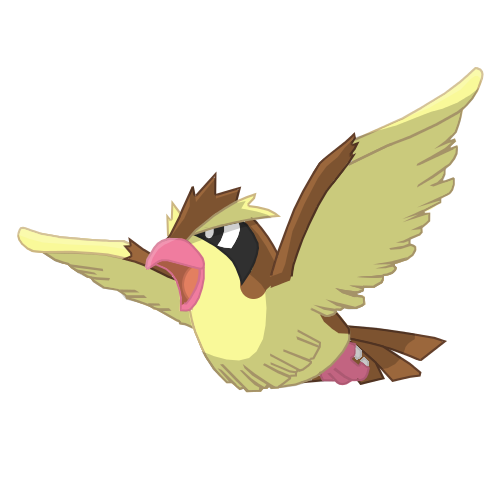

-
Pikachu
HP-300

Descrição
É um tipo de Pokémon elétrico, os discos vermelhos em suas bochechas são capazes de gerar choques elétricos de intensidade variável, chegando até o nível de poder de um raio. Eles também o usam para se defender.
-
Charmander
HP-300
Descrição
A chama que arde na ponta da cauda é uma indicação das suas emoções. A chama vacila quando Charmander está desfrutando de si mesmo. Se o Pokémon fica furioso, a chama queima ferozmente.
-
Charizard
HP-1000

Descrição
Charizard voa em torno do céu em busca de adversários poderosos. Ele respira fogo de tão grande calor que derrete qualquer coisa. No entanto, nunca vira a sua respiração ardente em qualquer adversário mais fraco do que o próprio.
-
Squirdle
HP-300
Descrição
O casco de Squirtle não é apenas usado para a proteção. A forma arredondada do casco e as ranhuras em sua superfície ajudam a minimizar a resistência na água, permitindo que este Pokémon nade em altas velocidades.
-
Bulbasaur
HP-300

Descrição
Bulbassauro pode ser visto cochilando sob luz solar intensa. Há uma semente na sua parte traseira. Por absorvendo os raios do sol, a semente cresce progressivamente maior
-
Pidgey
HP-300
Descrição
Pidgey tem um sentido extremamente afiado de direção. Ele é capaz de infalivelmente voltar para seu ninho, por mais longe que seja removido do seu ambiente familiar.
-
Geodude
HP-400
Descrição
Quanto mais o Geodude vive, mais erosado ficam suas extremidades, o deixado mais circular em aparência. Por outro lado, o coração dele sempre será duro, escarpado e áspero.
-
Dratini
HP-600
Descrição
Dratini morde e sacode sua pele velha continuamente. Ele faz isso porque a energia vital dentro do seu corpo constrói de forma constante para atingir níveis incontroláveis.
-
Mewtwo
HP-1200

Descrição
Mewtwo é um Pokémon que foi criado por manipulação genéticado do Mew. No entanto, apesar de o poder científico dos seres humanos criado o corpo deste Pokémon, eles não conseguiram dotar Mewtwo com um coração compassivo.